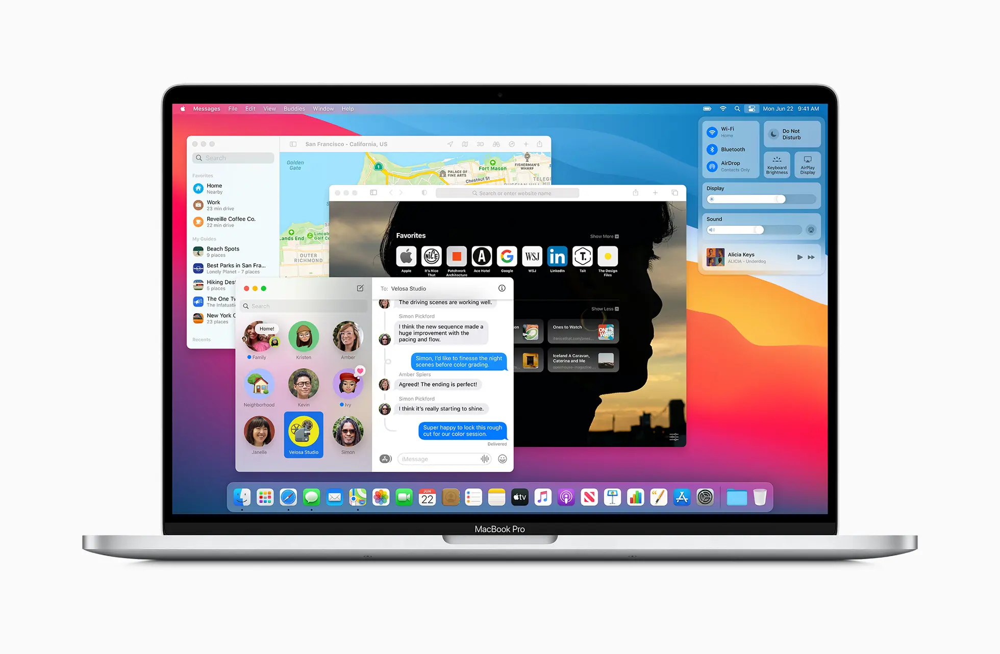
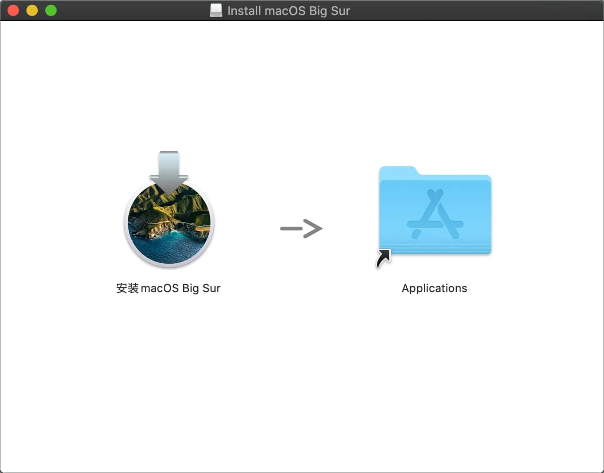

请访问原文链接：macOS Big Sur 11.7.11 (20G1443) 正式版 ISO、PKG、DMG、IPSW 下载 查看最新版。原创作品，转载请保留出处。
生活本不易，原创更不易。还请友商高抬贵手，尊重彼此的劳动成果。谢谢🙏
作者主页：sysin.org
2026-02-03，今日凌晨，Apple 罕见地为已停止支持两年多的 macOS Big Sur 发布了 11.7.11 更新。此更新延长了 iMessage、FaceTime 和设备激活等功能所需的认证（更新了证书），使其在 2027 年 1 月后仍能继续使用。
更新摘要：
macOS Big Sur 11.7.x 同样为 安全更新，不再赘述。
macOS Big Sur 11.6.x 皆为 安全更新，不再赘述。
macOS Big Sur 11.6.5 (20G527) 于今日（2022.03.15）凌晨推送。本更新提高了 macOS 的安全性。
macOS Big Sur 11.6.3 (20G415) 于今天（2022 年 1 月 27 日）发布，本次同样为 安全更新。
10 月 26 日，在 macOS Monterey 正式版发布的同时，macOS Big Sur 11.6.1 (20G224) 悄然更新，本次为 安全更新。看起来 Big Sur 的安全更新还会继续下去。
11.6 完整安装包终于在 9 月 17 日发布，所有格式已更新。
macOS Big Sur 11.6 更新说明：
本更新提高了 macOS 的安全性，建议所有用户安装。
有关本更新安全性内容的更多信息，请访问：https://support.apple.com/100100
1. macOS Big Sur 正式版发布
产品主页：https://www.apple.com.cn/macos/big-sur/
功能特性：https://www.apple.com.cn/macos/big-sur/features/
macOS Big Sur
一派新风貌，
一切任施展。

macOS Big Sur 将强大实力和优美外观的结合提升到一个崭新的高度。精心雕琢的全新设计，让你能淋漓尽致地感受 Mac 的魅力；Safari 浏览器迎来重大更新，待你饱览；地图 app 和信息 app 满载新功能，任你探索；更透明的隐私权限，保护也更周到。
macOS Big Sur 11.0 release date: 2020.11.12（发布日期：SYSIN CST 2020 年 11 月 13 日）
2. macOS Big Sur 硬件兼容性列表
看看你的 Mac 是否能用 macOS Big Sur
MacBook 2015 年和后续机型 进一步了解 >
MacBook Air 2013 年和后续机型 进一步了解 >
MacBook Pro 2013 年末和后续机型 进一步了解 >
Mac mini 2014 年和后续机型 进一步了解 >
Mac Pro 2013 年和后续机型 进一步了解 >
iMac 2014 年和后续机型 进一步了解 >
iMac Pro 2017 年和后续机型 (所有机型)
如果你的 Mac 不在兼容性列表，参看：在不受支持的 Mac 上安装 macOS (索引页面)
3. macOS Big Sur 版本历史
更新说明详见 macOS Release Notes
- macOS Big Sur 11.7.11 (20G1443) - 2026.02.03
- macOS Big Sur 11.7.10 (20G1427) - 2023.09.11
- macOS Big Sur 11.7.9 (20G1426) - 2023.07.25
- macOS Big Sur 11.7.8 (20G1351) - 2023.06.22
- macOS Big Sur 11.7.7 (20G1345) - 2023.05.18
- macOS Big Sur 11.7.6 (20G1231) - 2023.04.10
- macOS Big Sur 11.7.5 (20G1225) - 2023.03.27
- macOS Big Sur 11.7.4 (20G1120) - 2023.02.15
- macOS Big Sur 11.7.3 (20G1116) - 2023.01.23
- macOS Big Sur 11.7.2 (20G1020) - 2022-12-13
- macOS Big Sur 11.7.1 (20G918) - 2022-10-24
- macOS Big Sur 11.7 (20G817) - 2022-09-12
- macOS Big Sur 11.6.8 (20G730) - 2022-07-20
- macOS Big Sur 11.6.7 (20G630) - 2022-06-09
- macOS Big Sur 11.6.6 (20G624) - 2022-05-16
- macOS Big Sur 11.6.5 (20G527) - 2022-03-14
- macOS Big Sur 11.6.4 (20G417) - 2022-02-14
- macOS Big Sur 11.6.3 (20G415) - 2022-01-26
- macOS Big Sur 11.6.2 (20G314) - 2021-12-13
- macOS Big Sur 11.6.1 (20G224) - 2021-10-25
- macOS Big Sur 11.6 (20G165) - 2021-09-13
- macOS Big Sur 11.5.2 (20G95) - 2021-08-11
- macOS Big Sur 11.5.1 (20G80) - 2021-07-26
- macOS Big Sur 11.5 (20G71) - 2021-07-21
- macOS Big Sur 11.4 (20F71) - 2021-05-24
- macOS Big Sur 11.3.1 (20E241) - 2021-05-03
- macOS Big Sur 11.3 (20E232) - 2021-04-26
- macOS Big Sur 11.2.3 (20D91) - 2021-03-08
- macOS Big Sur 11.2.2 (20D80) - 2021-02-25
- macOS Big Sur 11.2.1 (20D74) - 2021-02-09
- macOS Big Sur 11.2 (20D64) - 2021-02-01
- macOS Big Sur 11.1 (20C69) - 2020-12-14
- macOS Big Sur 11.0.1 (20B50) - 2020-11-19
- macOS Big Sur 11.0.1 (20B29) - 2020-11-12
4. 下载 macOS Big Sur

(1) ISO 格式软件包 (推荐)
部分版本已清理。
本站原创可引导映像，可以在当前系统中安装或者升级，可以通过 USB 存储引导安装，也可以用于虚拟机安装。
此版本更多介绍请参看：macOS Big Sur 11.7.11 (20G1443) Boot ISO 原版可引导映像下载
macOS Big Sur 11.7.11 (20G1443) ISO - Final update
百度网盘链接：https://pan.baidu.com/s/1q8SBBADSD8pXibTVJ1M0lQ?pwd=7f9w
SHA256SUM：953ea3b1f85f7d05b150f3c1ca509c148f80bf91d5719bfd6003667a8f6f247cmacOS Big Sur 11.7.10 (20G1427) ISO
百度网盘链接：https://pan.baidu.com/s/1a9nK24pC13pwOzRXslJ-9g?pwd=vuue
SHA256SUM：51b738768de10cb524038d62d90496a32dc054e092b5d6b431aba72810ffb7e9macOS Big Sur 11.7.9 (20G1426) ISO
百度网盘链接：[EoD]macOS Big Sur 11.7.8 (20G1351) ISO
百度网盘链接：[EoD]macOS Big Sur 11.7.7 (20G1345) ISO
百度网盘链接：[EoD]macOS Big Sur 11.7.6 (20G1231) ISO
百度网盘链接：[EoD]macOS Big Sur 11.7.5 (20G1225) ISO
百度网盘链接：https://pan.baidu.com/s/1xdyZwXM_ZvDF2ahnOXaJzA?pwd=m5hk
SHA256SUM：a2302cbb7546f864e6817c366c2f3a0a69e4881374282f32f80ada930e607079macOS Big Sur 11.7.4 (20G1120) ISO
百度网盘链接：[EoD]macOS Big Sur 11.7.3 (20G1116) ISO
百度网盘链接：[EoD]macOS Big Sur 11.7.2 (20G1020) ISO
百度网盘链接：[EoD]macOS Big Sur 11.7.1 (20G918) ISO
百度网盘链接：[EoD]macOS Big Sur 11.7 (20G817) ISO
百度网盘链接：https://pan.baidu.com/s/1XAxkFe2bo0af7vJNQ0Fejg?pwd=bqgn
SHA256SUM：f17fccef4a19cec01389ea0bea5b5fa4eb34bb55a3a678653c1eda36620c6262macOS Big Sur 11.6.8 (20G730) ISO
百度网盘链接：[EoD]macOS Big Sur 11.6.7 (20G630) ISO
百度网盘链接：[EoD]macOS Big Sur 11.6.6 (20G624) ISO
百度网盘链接：[EoD]macOS Big Sur 11.6.5 (20G527) ISO - 推荐版本
百度网盘链接：https://pan.baidu.com/s/125Wi_SP58_sD6uXm_jtjmw?pwd=gcjh
SHA256SUM：16ea61cba4bf5444ef9681466da88df888bf95f6284e5ff2169ee4cbdb222505macOS Big Sur 11.6.4 (20G417) ISO
百度网盘链接：[EoD]macOS Big Sur 11.6.3 (20G415) ISO
百度网盘链接：[EoD]macOS Big Sur 11.6.2 (20G314) ISO
百度网盘链接：[EoD]macOS Big Sur 11.6.1 (20G224) ISO
百度网盘链接：[EoD]macOS Big Sur 11.6 (20G165) ISO
百度网盘链接：https://pan.baidu.com/s/1cLd8jGpVtZYq0tR7xmj7fQ?pwd=6v1m
SHA256SUM：584570683037722d68355ac8d1fa1d3ce66012a6c7090dcd165acb18029a2660macOS Big Sur 11.5.2 (20G95) ISO
百度网盘链接：[EoD]macOS Big Sur 11.5.1 (20G80) ISO
百度网盘链接：[EoD]macOS Big Sur 11.5 (20G71) ISO
百度网盘链接：https://pan.baidu.com/s/1ooFxIzn6jnhabcsgjB_h5A?pwd=wi2u
SHA256SUM：5af8f20621fe61856ad0ccbe714aea0341b062240af04ac76661dd68ed83ccb9macOS Big Sur 11.4 (20F71) ISO
百度网盘链接：https://pan.baidu.com/s/1Es3ifM0l4GuBUICgXg1LqQ?pwd=w72q
SHA256SUM：1b52fe962c9f364e3060aad2e2a5d38f4119a95cd53bc770f6660cfbb0fdc99bmacOS Big Sur 11.3.1 (20E241) ISO
百度网盘链接：[EoD]macOS Big Sur 11.3 (20E232) ISO
百度网盘链接：https://pan.baidu.com/s/1yS4oB_tlPnCMlC0Ui3CiYA?pwd=6666
SHA256SUM：d23c30e89882129d74ca5973b98a7ef7a2fd6969e20991ffc5d87527e08af0f7macOS Big Sur 11.2.3 (20D91) ISO
百度网盘链接：[EoD]macOS Big Sur 11.2.2 (20D80) ISO
百度网盘链接：[EoD]macOS Big Sur 11.2.1 (20D74) ISO
百度网盘链接：[EoD]macOS Big Sur 11.2 (20D64) ISO
百度网盘链接：https://pan.baidu.com/s/17isQzpkFtv6B0I835uX7lw?pwd=o618macOS Big Sur 11.1 (20C69) ISO
百度网盘链接：https://pan.baidu.com/s/1ZEsby11nRLDhjOnaNQ-a_A?pwd=vpuq
(2) PKG 格式软件包
部分版本已清理。
该格式软件包双击运行后将自动安装在
/Applications下。
macOS Big Sur 11.7.11 (20G1443) (sysin) - Final update
百度网盘链接：https://pan.baidu.com/s/1XJsr9YptgUxg1XufwMA-8A?pwd=nji8
SHA256SUM：includemacOS Big Sur 11.7.10 (20G1427) (sysin)
百度网盘链接：https://pan.baidu.com/s/1r9fT4bPhIaZpiSnUUJ0TXw?pwd=3fnx
SHA256SUM：includemacOS Big Sur 11.7.5 (20G1225) (sysin)
百度网盘链接：https://pan.baidu.com/s/1Thz9Py2bvKWR7YIr6sU_sA?pwd=kusi
SHA256SUM：fc8380b92f548f53f28436723dedfdfb6678cfdb6536393e5f92faba9d17775bmacOS Big Sur 11.7 (20G817) (sysin)
百度网盘链接：https://pan.baidu.com/s/1l91mF0VuyXGN-pgOYk7hNw?pwd=ljnd
SHA256SUM：9146b92eebf56fde3462f660d3c361bf917a941ddac1d9c0faefaa7e67cb9f85macOS Big Sur 11.6.5 (20G527) (sysin) - 推荐版本
百度网盘链接：https://pan.baidu.com/s/1NzQcMHIhPP8w874B_JVSgA?pwd=l4vv
SHA256SUM：dee8b604e1ef66f4385fa03cb57d29cbc7efef6c1e7f8740aefd37a268c2bb16macOS Big Sur 11.6 (20G165) (sysin)
百度网盘链接：https://pan.baidu.com/s/12YQEEJC9d1iAVBdPcJAVlw?pwd=aiiq
SHA256SUM：6142d4200f415d1253c437bdfcc7911bfb568ed16de1f0350bbc76299940647amacOS Big Sur 11.5 (20G71) (sysin)
百度网盘链接：https://pan.baidu.com/s/1Gp6RJMHFrgZRTs2GPb-xJg?pwd=w24b
SHA256SUM：443fe76c856d399fb57f1a19fbd5beec463608bbc3812d6a40df0f8419a9ff9cmacOS Big Sur 11.4 (20F71) (sysin)
百度网盘链接：https://pan.baidu.com/s/17yarcLb4u6m1SA6YBKRNuw?pwd=vl3b
SHA256SUM：3374333d98ff267f3520ef1efcdae978ec87043be0f70b790b4b6cd0465b98d7macOS Big Sur 11.3 (20E232) (sysin)
百度网盘链接：https://pan.baidu.com/s/1H3kPWj5xQOKbD0Ty3MZCBw?pwd=9oi3
SHA256SUM：7009dad5da542b01147e86fe1bda191c2cea1439b42f82e65b5eb7d585e2e1b3macOS Big Sur 11.2 (20D64) (sysin)
百度网盘链接：https://pan.baidu.com/s/1KDtzJD_YVQIXlxMRfUCilA?pwd=pf8pmacOS Big Sur 11.1 (20C69) (sysin)
百度网盘链接：https://pan.baidu.com/s/1DTcS_gXUfrMgwIkYkVV5Nw?pwd=4b8vmacOS Big Sur 11.0.1 (20B29) (sysin)
百度网盘链接：https://pan.baidu.com/s/161L3q7uo2LQeRRLvpkPFbA?pwd=snjw
(3) DMG 格式软件包
停止更新，请使用 ISO 格式替代。
macOS Big Sur 11.6 (20G165) - Final
百度网盘链接：https://pan.baidu.com/s/1GBZPcxTGEaFm6Yii34Ouxg?pwd=ekt9
SHA256SUM：08c59c1ccd77bb850254b965dc959c8f17a6ce078b26b9409f47077cdb4b7ec5macOS Big Sur 11.5 (20G71)
百度网盘链接：https://pan.baidu.com/s/17i4zFNEL8ZQAtSCsFUljrw?pwd=klws
SHA256SUM：1be2a9c084d2e031cb77e2da9b71718ea6dfa2cc855c2223da874c3094c3eb8emacOS Big Sur 11.4 (20F71)
百度网盘链接：https://pan.baidu.com/s/1VKe5WJIErcwW22e2K8XxPA?pwd=r72l
SHA256SUM：b80421abe9676295c63c4840704e0ffb58f0fde7d6a4f28d421d3b6e78b00d08macOS Big Sur 11.3 (20E232)
百度网盘链接：https://pan.baidu.com/s/1xujCW7pv-vDrElYIFNB5sA?pwd=6666macOS Big Sur 11.2 (20D64)
百度网盘链接：https://pan.baidu.com/s/1ngyinnK-nE4Snf2d8AIaBQ?pwd=jkw2macOS Big Sur 11.1 (20C69)
百度网盘链接：https://pan.baidu.com/s/1Vc_xm-oA3nXDmT_33y407w?pwd=flk7macOS Big Sur 11.0.1 (20B50)
百度网盘链接：https://pan.baidu.com/s/1-qbH3liMDEdpI8bWnNUkew?pwd=9817
(4) IPSW 固件 (Apple 芯片 Mac 专用)
部分版本已清理。
无论是 iso 还是 dmg，或者是 App Store 下载的 macOS 都通用于 Intel Mac 和 Apple silicon Mac。
ipsw 格式为 Apple silicon Mac 专用。
macOS Big Sur 11.6 (20G165) - Final
百度网盘链接：https://pan.baidu.com/s/11vlbGpkK33AT1dh-JlUp6A?pwd=02wg
SHA256SUM：9bc6b9e0d42bb892ee139a8d88fc5e8ce2931d57743d8e3ed1ce45aa5da8add6macOS Big Sur 11.5 (20G71)
百度网盘链接：https://pan.baidu.com/s/1aHAo3-1kkV9DgQZdtqIrew?pwd=k0oh
SHA256SUM：7f926ba7f6e536cb0a09ac7dc4ab1faf174ddb4d5344c6135aca23e75a38800amacOS Big Sur 11.4 (20F71)
百度网盘链接：https://pan.baidu.com/s/1B3NI5h4FKblpmW4L7MezoQ?pwd=6ui6macOS Big Sur 11.3 (20E232)
百度网盘链接：https://pan.baidu.com/s/1hjXrQurZjnkqPt91cPYP9w?pwd=6666macOS Big Sur 11.2 (20D64)
百度网盘链接：https://pan.baidu.com/s/1gJt4SAiXZa0LfRkABYyobQ?pwd=glllmacOS Big Sur 11.1 (20C69)
百度网盘链接：https://pan.baidu.com/s/1wK1gIdqa64JYmGfR3pphGQ?pwd=kidr
(5) App Store 链接
https://apps.apple.com/app/macos-big-sur/id1526878132
或者打开 App Store 搜索 “macOS Big Sur” 即可下载（下载的是当前最新版）。
5. 附：适用的 VMware 软件下载链接
建议在以下版本的 VMware 软件中运行（Linux OVF 无需本站定制版可以正常运行，macOS 虚拟化如果不是 Mac 必须使用定制版才能运行，Windows OVF 需要定制版才能启用完整功能）：
- VMware vSphere：
- VMware ESXi 9 or with driver & vCenter Server 9 & VCF Operations 9
- VMware ESXi 8 or with driver & vCenter Server 8
- VMware ESXi 7 or with driver & vCenter Server 7
- macOS：VMware Fusion
- Linux：VMware Workstation for Linux
- Windows：VMware Workstation for Windows
6. 如何创建可引导的 macOS 安装器

文章用于推荐和分享优秀的软件产品及其相关技术，所有软件提供免费版或试用版。内容若侵犯了您的版权，请联系作者删除。如果您喜欢这篇文章，或者觉得它对您有所帮助，亦或发现有不当之处；欢迎发表评论，也欢迎分享这个网站，或者赞赏一下，谢谢！提示：捐赠或赞赏属于自愿赠予行为，提交后即表示您对作者的支持与认可。为避免误操作，请在确认前仔细检查金额，支付完成后将无法撤销或退还。
 支付宝赞赏
支付宝赞赏  微信赞赏
微信赞赏赞赏一下
敬请注册！点击 “登录” - “用户注册”（已知不支持 21.cn/189.cn 邮箱）。 请勿使用联合登录（已关闭）。